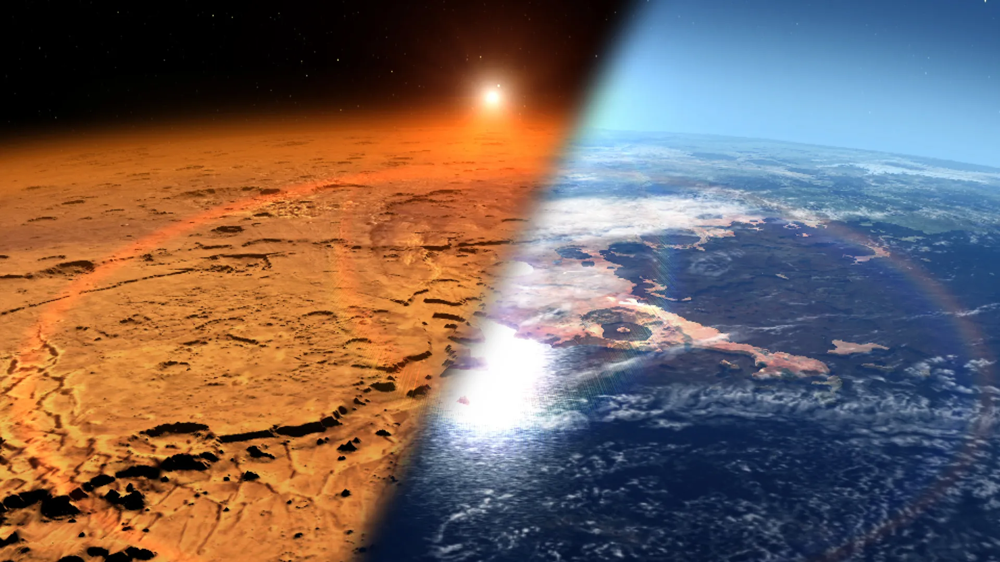
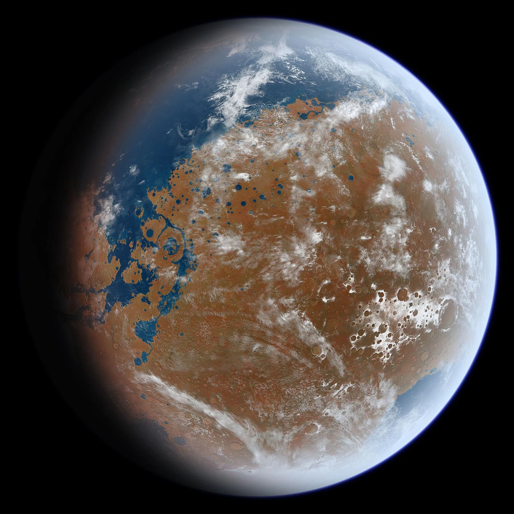

When the solar system settled into its current layout about 4.5 billion years ago, Mars formed when gravity pulled swirling gas and dust in to become the fourth planet from the Sun. Mars is about half the size of Earth, and like its fellow terrestrial planets, it has a central core, a rocky mantle, and a solid crust.

Mars is believed to have lost its water when it lost its magnetic field around 4 billion years ago. Without an atmosphere, there was nothing to prevent Mars' water from evaporating and then being lost to space. This radiation also made the existence of life at the surface of Mars unfeasible.

The first person to observe Mars with a telescope was Galileo Galilei, in 1610. In the century following, astronomers discovered the planet's polar ice caps.